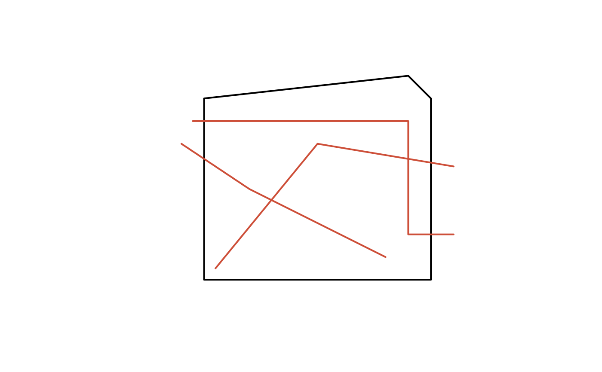
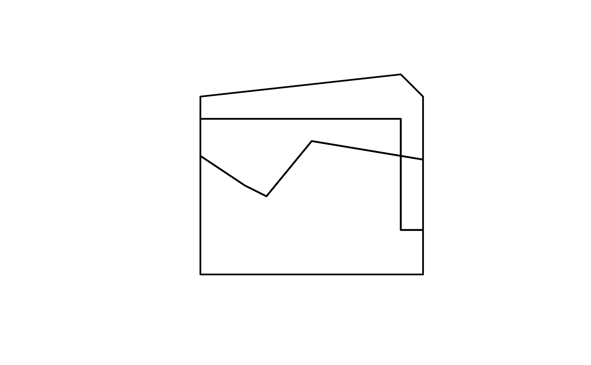

Split a polygon based on a sf LINESTRING object and optional border connections.
desplim_split.RdSplit a polygon based on a sf LINESTRING object and optional border connections.
Usage
desplim_split(
input_polygon,
input_lines,
input_buildings = NULL,
enable_line_nearest_node = TRUE,
enable_border_connect = FALSE,
...
)Arguments
- input_polygon
object of class sf of type POLYGON to be split.
- input_lines
object of class sf of type LINESTRING or MULTILINESTRING to be used for splitting.
- input_buildings
object of class sf of type POLYGON or MULTIPOLYGON. An optional sf object representing buildings which cannot be intersected during the splitting procedure. Default is
NULL.- enable_line_nearest_node
logical; whether to connect leaf nodes of
input_linesto the nearest node usingdesplim_line_nearest_node. Default isTRUE.- enable_border_connect
logical; whether to connect
input_linesto the border ofinput_polygonusingdesplim_connect_border. Default isFALSE.- ...
additional arguments passed to
desplim_connect_borderif set toTRUE.
Details
The function splits an input polygon based on an initial set of
linestrings. If enable_line_nearest_node is TRUE, leaf nodes in the input
linestrings are connected to the nearest node as laid out in
desplim_line_nearest_node. If enable_border_connect is TRUE, the input
linestrings are connected to the border of the input polygon using
desplim_connect_border.
Examples
# Create polygon
crs <- 32632
district_poly <- sf::st_polygon(list(rbind(
c(0, 0),
c(100, 0),
c(100, 80),
c(90, 90),
c(0, 80),
c(0, 0)
)))
district_sf <- sf::st_as_sf(sf::st_sfc(district_poly, crs = crs))
plot(district_sf, border = "black", lwd = 2, reset = FALSE)
# Create roads
road1 <- sf::st_linestring(rbind(c(5, 5), c(50, 60), c(110, 50)))
road2 <- sf::st_linestring(rbind(c(-10, 60), c(20, 40), c(80, 10)))
road3 <- sf::st_linestring(rbind(c(-5, 70), c(90, 70), c(90, 20), c(110, 20)))
roads_sf <- sf::st_as_sf(sf::st_sfc(road1, road2, road3, crs = crs))
plot(roads_sf, col = "tomato3", lwd = 2, add = TRUE)

# Split with no connection
split_no_connect <- desplim_split(
district_sf,
roads_sf,
enable_line_nearest_node = FALSE
)
plot(split_no_connect, border = "black", lwd = 2)

# Split with default settings
split_nearest_node <- desplim_split(
district_sf,
roads_sf
)
plot(split_nearest_node, border = "slateblue3", lwd = 2)
# Split with border connection
split_polygons_border <- desplim_split(
district_sf,
roads_sf,
enable_border_connect = TRUE,
distance_nodes = 50,
distance_intersect = 5
)
plot(split_polygons_border, border = "olivedrab", lwd = 2)